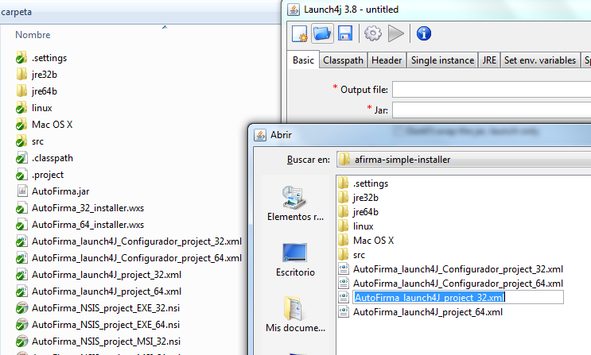
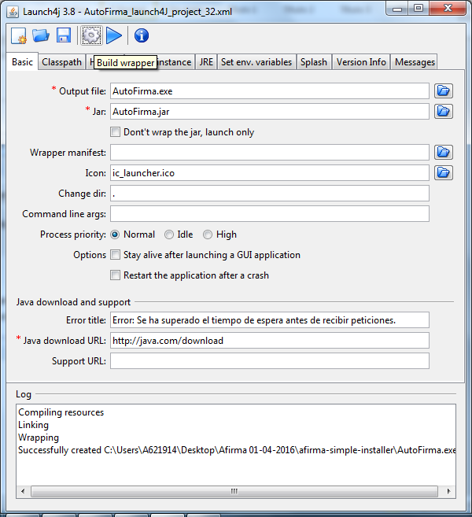
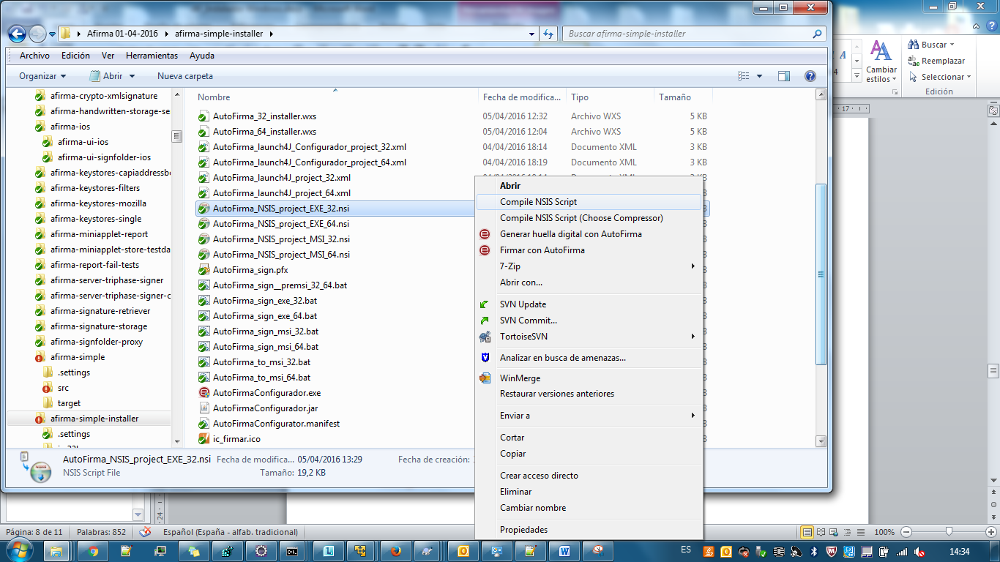
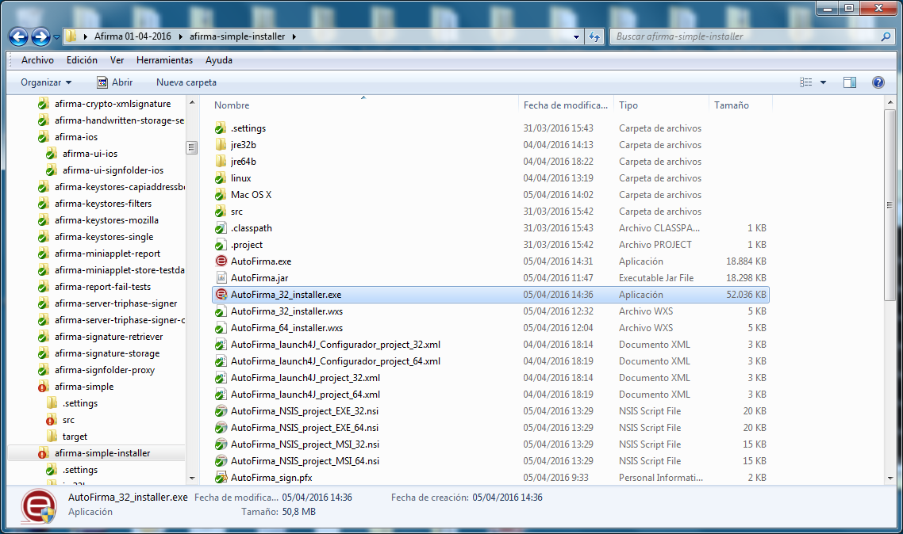
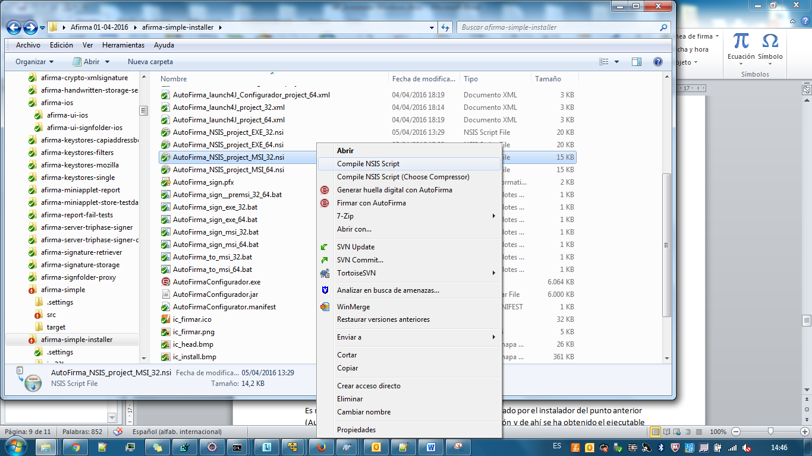

AutoFirma cuenta con dos tipos de instaladores para sistemas operativos Windows:
-
Fichero .exe: Permite instalar la aplicación mediante una serie de diálogo gráficos que permiten seleccionar varias opciones de configuración.
- El instalador .exe de AutoFirma está pensado para ser utilizado por los usuarios de la aplicación.
-
Fichero .msi: Permite automatizar el proceso de instalación, reduciendo al mínimo la intervención manual, ya que toda la información.
- El instalador .msi de AutoFirma está pensado para ser utilizado por administradores de sistemas que deseen realizar despliegues masivos de la aplicación.
Este documento tiene como objetivo la explicación en detalle de los pasos necesarios para la generación de ambos ficheros.
Los instaladores Windows de AutoFirma incluyen la JRE con la que se va a ejecutar la aplicación en el equipo del usuario. Para abarcar los equipos de 32 y 64 bits, se creará una versión para cada una de las arquitecturas en donde la aplicación será la misma y cambiará únicamente algunas propiedades del empaquetado y la versión de Java con la cual se empaqueta.
Así pues, obtendremos 4 versiones del instalador de AutoFirma para Windows:
-
AutoFirma_32_vX_Y_Z_installer.exe
-
AutoFirma_64_vX_Y_Z_installer.exe
-
AutoFirma_32_vX_Y_Z_installer.msi
-
AutoFirma_64_vX_Y_Z_installer.msi
Los proyectos java utilizados (AutoFirma y AutoFirmaConfigurador) son los mismos para todos los instaladores.
Requisitos mínimos
Sistema operativo:
- Windows XP SP3 con arquitectura 32 (x86) o 64 (x64) bits.
Adicionalmente para la construcción de los instaladores se hace uso de las siguientes herramientas:
-
Java SE Runtime Environment 8 o 9 (32 y 64 bits) (http://www.oracle.com/technetwork/java/javase/downloads/index.html)
- JREs con la que se empaquetarán los instaladores.
-
Launch4j (https://sourceforge.net/projects/launch4j/files/launch4j-3/)
- Herramienta para la envoltura de los JAR de AutoFirma a modo de EXE.
-
WiX (http://wixtoolset.org/releases/)
- Herramienta para la generación del instalador MSI.
-
NSIS (http://nsis.sourceforge.net/Download)
-
Herramienta para la generación de los EXE de instalación.
-
Se requieren también los siguientes plugins:
-
NsProcess Plugin (http://nsis.sourceforge.net/NsProcess_plugin)
- Plugin para permitir la detección y manipulación de procesos durante la instalación.
-
Registry Plugin (https://nsis.sourceforge.io/Registry_plug-in)
- Plugin para permitir la búsqueda de entradas en el registro.
-
-
Deberán localizarse los ficheros de los plugins según la siguiente jerarquía:
-
NSIS 2.x:
NSIS/
├── Include/
│ └── nsProcess.nsh
└── Plugins/
└── nsProcess.dll└── registry.dll
NSIS 3.x:
NSIS/
├── Include/
│ └── nsProcess.nsh│ └── Registry.nsh
└── Plugins/
├── x86-ansi/
│ └── nsProcess.dll│ └── registry.dll
└── x86-unicode/
└── nsProcess.dll└── registry.dll
Preparación del entorno
Para la generación del instalador de AutoFirma será necesario disponer del software listado en el apartado de requisitos mínimos.
Los distintos instaladores de AutoFirma se construirán en base a la estructura de directorios y los recursos alojados en el módulo afirma-simple-installler del proyecto clienteafirma en GitHub (https://github.com/ctt-gob-es/clienteafirma/tree/master/afirma-simple-installer).
Estructura de ficheros
Los directorios y ficheros de utilidad que encontraremos dentro de este módulo son:
-
AutoFirma32
- Directorio en el que se generarán los ejecutables de 32bits.
-
AutoFirma64
- Directorio en el que se generarán los ejecutables de 64bits.
-
certificados
- Directorio con los certificados SSL que deben considerarse de confianza.
-
jar
- Directorio en el que guardar los JAR de AutoFirma.
-
java32
- Directorio en el que guardar la JRE que se dese empaquetar con AutoFirma 32bits.
-
java64
- Directorio en el que guardar la JRE que se dese empaquetar con AutoFirma 64bits.
-
AutoFirma_32_installer.wxs
- Fichero para la construcción del instalador MSI de 32bits.
-
AutoFirma_64_installer.wxs
- Fichero para la construcción del instalador MSI de 64bits.
-
AutoFirma_launch4J_Configurador_project_32.xml
- Fichero para el empaquetado EXE 32bits de AutoFirmaConfigurador.
-
AutoFirma_launch4J_Configurador_project_64.xml
- Fichero para el empaquetado EXE 64bits de AutoFirmaConfigurador.
-
AutoFirma_launch4J_project_32.xml
- Fichero para el empaquetado EXE 32bits de AutoFirma.
-
AutoFirma_launch4J_project_64.xml
- Fichero para el empaquetado EXE 64bits de AutoFirma.
-
AutoFirma_NSIS_project_EXE_32.nsi
- Fichero para la generación del instalador EXE de 32bits.
-
AutoFirma_NSIS_project_EXE_64.nsi
- Fichero para la generación del instalador EXE de 64bits.
-
AutoFirma_NSIS_project_MSI_32.nsi
- Fichero para generar el EXE de instalación a partir del cual se construye el instalador MSI de 32bits.
-
AutoFirma_NSIS_project_MSI_64.nsi
- Fichero para generar el EXE de instalación a partir del cual se construye el instalador MSI de 64bits.
-
AutoFirmaCommandLine_launch4J_project_32.xml
- Fichero para el empaquetado EXE 32bits de AutoFirma para línea de comandos.
-
AutoFirmaCommandLine_launch4J_project_64.xml
- Fichero para el empaquetado EXE 64bits de AutoFirma para línea de comandos.
-
AutoFirmaConfigurator.manifest
- Fichero de permisos para que ejecución de AutoFirmaConfigurador con permisos de administrador.
-
AutoFirma_to_msi_32.bat
- Script para la creación del instalador MSI de 32 bits a partir de su pre-instalador.
-
AutoFirma_to_msi_64.bat
- Script para la creación del instalador MSI de 64 bits a partir de su pre-instalador.
-
ic_firmar.ico
- Icono de la aplicación.
-
ic_head.bmp
- Imagen de cabecera del instalador EXE.
-
ic_install.bmp
- Imagen lateral del instalador EXE.
-
ic_launcher.ico
- Icono del lanzador de la aplicación.
-
licencia.txt
- Información de la licencia del producto.
-
no_ejecutar_x64.exe
- Desinstalador de la aplicación para el MSI de 64bits.
-
no_ejecutar_x86.exe
- Desinstalador de la aplicación para el MSI de 32bits.
-
splash.bmp
- Imagen splash que se muestra al abrir la aplicación antes de que aparezca la primera pantalla.
Configuración de las JRE empaquetadas
Las JRE con las que se empaquetarán los instaladores de AutoFirma en Windows no están incluidos en el directorio cargado en el repositorio de código. El desarrollador encargado de empaquetarlo deberá introducirlos en su copia local de esta estructura. No se debe subir nunca su contenido al repositorio por su tamaño, que no siempre querremos usar la misma JRE y, según la versi´çon empleada, por problemas de licencia.
Las instrucciones para la configuración de las JRE son las siguientes:
- Copiar las JRE
-
El usuario deberá copiar a los directorios “java32” y “java64” una JRE de 32 y 64 bits respectivamente. Aquí se debe copiar el directorio “jre” (directorio incluido) de la JRE que se desee utilizar.
-
La estructura resultante sería:
-
java32
-
jre
- <ficheros_jre>
-
-
java64
-
jre
- <ficheros_jre>
-
-
-
Podemos, por ejemplo, instalarnos una JRE en nuestro equipo y luego copiar el directorio “jre” del directorio de instalación en el directorio “java32” o “java64” según corresponda.
-
Se debe utilizar una JRE 8 o superior, aunque se recomienda utilizar siempre la última disponible en el momento de empaquetar.
-
Las JRE de 32 y 64 bits utilizadas pueden tener distinta versión.
- Eliminar lo innecesario
-
Opcionalmente, se pueden eliminar los ficheros de las JRE que se sepan que son innecesarios para el correcto funcionamiento de la JVM durante la ejecución de AutoFirma.
-
Esto sirve para reducir el tamaño del instalador final y debería hacerse única y exclusivamente cuando estemos seguros de que no afectará a la operativa de la aplicación.
-
Por ejemplo, se pueden eliminar ficheros relativos al uso de JavaFX, ya que este API no se utiliza en AutoFirma y no son parte imprescindible de la JRE. Así pues, se eliminarían, entre otros, la extensión “jfxrt.jar” (17 Mb) y la biblioteca “jfxwebkit.dll” (42 Mb).
- Instalar certificados SSL
-
Para el correcto funcionamiento de AutoFirma frente a determinados servicios sobre SSL es necesario que se inserten en el almacén de confianza de las JRE los certificados de las autoridades susceptibles a utilizar por los servicios y que no estén reconocidas por defecto en Java.
-
En el directorio “certificados” se han guardado los certificados de raíces e intermedios de varias autoridades españolas. Si se desean agregar otros certificados como de confianza por defecto para AutoFirma, se deberían copiar los correspondientes certificados a este directorio.
-
Para insertar los certificados del directorio “certificados” en los almacenes de confianza de las dos JRE configuradas, se deberá ejecutar el script “insert_cacerts.bat” del directorio certificados. Este script utilizará la herramienta “keytool” de las JRE para insertar todos los certificados del directorio “certificados” en el almacén de confianza (cacerts) de las propias JRE.
Configuración de la versión de AutoFirma
Cada nueva versión de AutoFirma puede requerir que se actualicen diversos recursos de los ficheros de instalación. Ejemplos claros son el número de versión y la fecha del copyright. Los textos susceptibles de actualizarse en cada nueva versión de AutoFirma se encuentran en los siguientes ficheros de la estructura de directorios:
-
AutoFirma_32_installer.wxs
- Número de versión de AutoFirma 32bits.
-
AutoFirma_64_installer.wxs
- Número de versión de AutoFirma 64bits.
-
AutoFirma_launch4J_project_32.xml
- Número de versión del configurador de 32bits.
-
AutoFirma_launch4J_project_64.xml
- Número de versión del configurador de 64bits.
-
AutoFirmaCommandLine_launch4J_project_32.xml
- Número de versión de AutoFirma 32bits.
-
AutoFirmaCommandLine_launch4J_project_64.xml
- Número de versión de AutoFirma 32bits.
-
AutoFirma_NSIS_project_EXE_32.nsi
- Número de versión y nombre del instalador EXE de 32bits.
-
AutoFirma_NSIS_project_EXE_64.nsi
- Número de versión y nombre del instalador EXE de 64bits.
-
AutoFirma_NSIS_project_MSI_32.nsi
- Número de versión de AutoFirma 32bits.
-
AutoFirma_NSIS_project_MSI_64.nsi
- Número de versión de AutoFirma 64bits.
-
AutoFirma_to_msi_32.bat
- Número de versión del nombre del instalador MSI de 32bits.
-
AutoFirma_to_msi_64.bat
- Número de versión del nombre del instalador MSI de 64bits.
-
licencia.txt
- Texto de licencia, versión y año de copyright.
-
splash.bmp
- Año del copyright.
Generación de los ejecutables JAR
Como primer paso para la creación de los instaladores de AutoFirma, es necesario generar sus ejecutables. Para ello, deberemos descargarnos el proyecto “clienteafirma” de GitHub (https://github.com/ctt-gob-es/clienteafirma) y generar los distintos artefactos. Todas las dependencias de este proyecto están en el repositorio central de Maven pero, si se estuviese utilizando una versión aún no publicada de las biblioteca modificadas de AutoFirma y del proyecto JMulticard, sería necesario descargar y compilar también estos proyectos.
Para compilar cada uno de los proyectos, deberemos ejecutar el siguiente comando en el directorio principal de cada uno de ellos:
mvn clean install –DskipTests
El orden de ejecución debe ser:
-
Proyecto “clienteafirma-external” (Sólo si se usase una versión no publicada)
-
Proyecto “jmulticard” (Sólo si se usase una versión no publicada)
-
Proyecto “clienteafirma”
Una vez hecho esto, se habrán generado todos los artefactos del núcleo del Cliente @firma. Para generar los artefactos distribuibles se deberá ejecutar, en el directorio del proyecto “clienteafirma” el comando::
mvn clean install –DskipTests –Denv=install
Esta ejecución habrá generado los JAR “AutoFirma.jar” y “AutoFirmaConfigurador.jar” dentro del directorio “target” de los módulos “afirma-simple” y “afirma-ui-simple-configurator”, respectivamente.
Generación de los ejecutables EXE
El siguiente paso es generar los ficheros EXE de la aplicación a partir de los archivos JAR que se generaron en el apartado anterior. Para ello, primeramente, copiaremos los ficheros “AutoFirma.jar” y “AutoFirmaConfigurador.jar” al directorio “jar” del módulo afirma-simple-installer.
Para obtener los ejecutables EXE de AutoFirma se hará uso de la aplicación Launch4j.
Así, deberemos abrir la aplicación, seleccionar uno de los ficheros de configuración (icono con el icono de carpeta) y pulsar el botón “Build wrapper” (botón con el icono de engranaje) (Figuras 1 y 2).
<
Figura 1
<
Figura 2
El proceso debe repetirse para los ficheros de configuración:
-
AutoFirma_launch4J_project_32.xml
-
AutoFirmaCommandLine_launch4J_project_32.xml
-
AutoFirmaConfigurator_launch4J_project_32.xml
-
AutoFirma_launch4J_project_64.xml
-
AutoFirmaCommandLine_launch4J_project_64.xml
-
AutoFirmaConfigurator_launch4J_project_64.xml
Como resultado, se deben haber generado los ficheros EXE “AutoFirma.exe”, “AutoFirmaCommandLine.exe” y “AutoFirmaConfigurador.exe”, tanto en el directorio “AutoFirma32” como en “AutoFirma64” (6 ficheros en total).
Firma de los ejecutables
La firma de los ejecutables generados en el apartado anterior es opcional, pero debería hacerse cuando haya intención de publicar el instalador que se va a generar.
Los ejecutables anteriores no son corrientes, ya que en realidad son archivos JAR con una envoltura EXE. Este EXE, además, no está preparado para ser firmado directamente y debe realizarse a través de la herramienta “sign4j”, que a su vez utilizará otra herramienta de firma. Un ejemplo del uso de esta herramienta para la firma del fichero EXE con la herramienta SignTool de Microsoft, algoritmo SHA256withRSA y un sello de tiempo sería:
sign4j signtool sign /f ALMACEN.p12 /p CONTRASEÑA /a /fd SHA256 /tr http://sha256timestamp.ws.symantec.com/sha256/timestamp RUTA_EXE
En este comando:
-
ALMACEN.p12:
- Es la ruta del almacén PKCS#12/PFX que contiene la clave de firma.
-
CONTRASEÑA:
- Es la contraseña del almacén de claves.
-
RUTA_EXE:
- Es la ruta hacia el fichero EXE que se desea firmar.
Generación de los instaladores EXE
Una vez disponemos de los ficheros ejecutables EXE (ya sea firmados o no) se generará el instalador mediante la herramienta NSIS.
Para esto, se pincha con el botón derecho del ratón en el fichero AutoFirma_NSIS_project_EXE_32.nsi y se pulsa en la opción “Compile NSIS Script” (Figura 3). Este proceso generará en el directorio “AutoFirma32” el instalador AutoFirma_32_vX_Y_Z_installer.exe (Figura 4).
<
Figura 3
<
Figura 4
Al repetir el proceso con el fichero AutoFirma_NSIS_project_EXE_64.nsi, se obtendrá el instalador AutoFirma_64_vX_Y_Z_installer.exe en el directorio “AutoFirma64”.
Con esto, ya estarían operativos los ejecutables EXE. Sin embargo, en caso de que se deseasen publicar, es recomendable que se firmen antes con un certificado de firma de código reconocido por Microsoft. El proceso de firma se detalla en el apartado Firma de los instaladores.
Generación de los instaladores MSI
Para la generación del instalador MSI se hace uso de las herramientas de WiX que deben descargarse, instalarse y agregarse su ruta de binarios a la variable de entorno PATH. La ruta en cuestión para la instalación por defecto es C:\Program Files (x86)\WiX Toolset v3.11\bin.
A continuación, se ejecutará el script NSIS AutoFirma_NSIS_project_MSI_32.nsi o AutoFirma_NSIS_project_MSI_64.nsi, según se desee generar el instalador de 32 o 64 bits. (Figura 5).
<
Figura 5
Esto dará lugar al ejecutable “AutoFirmaGenerator.exe” en el directorio “AutoFirma32” o “AutoFirma64”, según corresponda.
A diferencia de los instaladores EXE generados anteriormente, el instalador MSI no crea ni elimina información del registro, ni tampoco genera un ejecutable de desinstalación. Únicamente crea la estructura de directorios de la aplicación y genera e importa los certificados necesarios. El resto de tareas las completa el ejecutable “AutoFirmaGenerator.exe” que acabamos de generar y que ya contiene las aplicaciones de AutoFirma y la JRE. Este ejecutable es el que se deberá empaquetar en forma de MSI.
Si el instalador MSI que vamos a generar va a publicarse, deberíamos firmar antes el ejecutable “AutoFirmaGenerator.exe”. El proceso de firma de este ejecutable es igual que el de los propios instaladores. Consulte el apartado Firma de los instaladores para más información.
Para generar el instalador MSI, ya se haya firmado “AutoFirmaGenerator.exe” o no, se deberá ejecutar el script AutoFirma_to_msi_32.bat, o su equivalente para 64 bits. Este script utiliza los siguientes recursos para la generación del instalador:
-
AutoFirmaGenerator.exe: El pre-instalador generado anteriormente.
-
no_ejecutar_x86.exe / no_ejecutar_x64.exe: Ejecutables para la desinstalación parcial de la aplicación. Se les ha asignado ese nombre para evitar que un usuario lo ejecute, dado que desinstalaría la aplicación, pero no eliminaría su registro del panel de aplicaciones. Se encuentran ya en el directorio.
-
AutoFirma_32_installer.wxs / AutoFirma_64_installer.wxs: Fichero de configuración que definen el proceso de generación del instalador MSI.
-
Iconos de la aplicación
El instalador MSI creado habrá aparecido en el directorio “AutoFirma32” con el nombre AutoFirma_32_vX_Y_Z_installer.msi, o en el directorio “AutoFirma64” con el nombre AutoFirma_64_vX_Y_Z_installer.msi, según cuál se ejecutase.
Con esto, ya estarían operativos los ejecutables MSI. Sin embargo, en caso de que se deseasen publicar, es recomendable que se firmen antes con un certificado de firma de código reconocido por Microsoft. El proceso de firma se detalla en el apartado Firma de los instaladores.
Crear nuevos desinstaladores
Es necesario destacar que los desinstaladores de la aplicación (“no_ejecutar_x86.exe” y “no_ejecutar_x64.exe”) no se generan como parte de la creación del instalador MSI y por eso es necesario disponer de ellos antes de generar el instalador. Estos desinstaladores, en realidad, se han generado como parte de la creación del instalador EXE.
Sin embargo, los desinstaladores del MSI, al contrario que los del EXE, deben ser totalmente silenciosos, por lo que deben cerrar los navegadores web abiertos automáticamente y no pedir consentimiento al usuario.
Para generar los desinstaladores del MSI es necesario modificar el script de desinstalación del instalador EXE para que cierre automáticamente los navegadores web, después generar una versión de los instaladores EXE (32 y 64 bits) con los scripts modificados, instalarlos y coger sus desinstaladores. Después se les debe cambiar el nombre a no_ejecutar_x86.exe y no_ejecutar_x64.exe, según corresponde.
La versión del instalador EXE generado debe desecharse, ya que el proceso de desinstalación de los instaladores EXE, sí debe pedir al usuario que cierre los navegadores web abiertos.
Si en algún momento fuese necesario modificar el comportamiento del desinstalador del MSI, se debería modificar el script de creación del instalador EXE y repetir el proceso descrito.
Para realizar el cambio concreto de cerrar los navegadores silenciosamente, en la sección “uninstall” de los ficheros de configuración “AutoFirma_NSIS_project_EXE_32.nsi” y “AutoFirma_NSIS_project_EXE_64.nsi” se ha dejado comentado el cambio a realizar.
Los nuevos desinstaladores deberían subirse al repositorio para evitar repetir el proceso cada vez.
Firma de los instaladores
Firmar los ejecutables con un certificado de firma de código reconocido por Microsoft permitirá a los usuarios identificar si la aplicación está generada por una entidad de confianza.
La firma de los instaladores EXE, MSI y del pre-instalador “AutoFirmaGenerator.exe” se puede realizar como el de cualquier otro ejecutable Microsoft Windows. Un ejemplo del comando para la firma con la herramienta SignTool de Microsoft, algoritmo SHA256withRSA y un sello de tiempo sería:
signtool sign /f ALMACEN.p12 /p CONTASEÑA /a /fd SHA256 /tr http://sha256timestamp.ws.symantec.com/sha256/timestamp RUTA_EJECUTABLE
En este comando:
-
ALMACEN.p12:
- Es la ruta del almacén PKCS#12/PFX que contiene la clave de firma.
-
CONTRASEÑA:
- Es la contraseña del almacén de claves.
-
RUTA_EJECUTABLE:
- Es la ruta hacia el fichero EXE o MSI que se desea firmar.
<
Esta obra está bajo una licencia Creative Commons Reconocimiento-NoComercial-CompartirIgual 3.0 Unported.